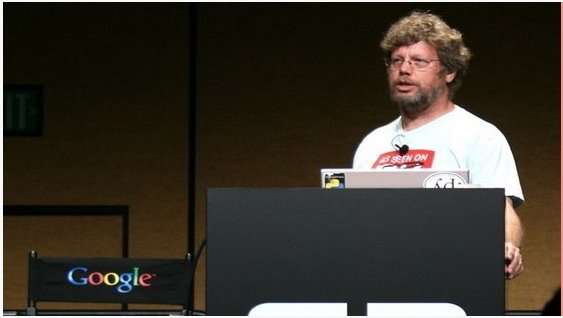

The so-called programmers refer to those who can create and write computer programs. No matter what kind of programmer a person is, he or she is contributing something to our society to a greater or lesser extent. However, some programmers' contributions exceed what an ordinary person can contribute in a lifetime. These programmers are pioneers and are respected. What they have contributed has changed the entire course of human civilization. Below, let us take a look at the 12 greatest programmers in human history.
1. The first computer programmer: Ada Lovelace

Ada Lovelace, originally named Augusta Ada Byron, was the daughter of the famous English poet Byron. A mathematics enthusiast, she is widely recognized by later generations as the first computer programmer.
Between 1842 and 1843, Ada spent nine months translating an article by Italian mathematician Luigi Menabrea about Charles Babbage's analytical engine. Behind the translation, she added many notes detailing how to use the machine to calculate Bernoulli numbers, which is considered the world's first computer program. Therefore, Ada is also considered the world's first programmer. However, some biographers have questioned the originality of Ada's computer programs because part of the program was written by Babbage himself.
Ada's article created many new ideas that Babbage had never mentioned. For example, Ada once predicted: "This machine could be used in the future for typesetting, composing music, or various more complex purposes."
In 1852, Ada died of excessive blood loss while being treated for cervical cancer, at only 36 years of age. One hundred years after her death, in 1953, Ada's earlier notes on Charles Babbage's "Sketch of the Analytical Engine" were republished and were considered to have had a significant influence on modern computing and software engineering.
2. Father of Pascal: Niklaus Wirth

Niklaus Emil Wirth, born in Winterthur, Switzerland, is a Swiss computer scientist.
From 1963 to 1967, he became an assistant professor in the Computer Science Department at Stanford University, and later held the same position at the University of Zurich. In 1968, he became a professor of informatics at ETH Zurich and also spent two years of further study at Xerox Palo Alto Research Center.
He was the chief designer of several programming languages, including Algol W, Modula, Pascal, Modula-2, Oberon, and others.
He is also one of the inventors of the Euler language. In 1984, he won the Turing Award for developing these languages. He was also an important member of the design and implementation team for the Lilith computer and the Oberon system.
His article "Program Development by Stepwise Refinement" is regarded as a classic in software engineering. The title of a book he wrote, Algorithms + Data Structures = Programs, is a famous saying in computer science.
3. Founder of Microsoft: Bill Gates

William Henry "Bill" Gates III is a famous American entrepreneur, investor, software engineer, and philanthropist. In his early years, he co-founded Microsoft with Paul Allen. He served as Microsoft's chairman, CEO, and chief software architect, and held more than 8% of the company's common stock, making him the company's largest individual shareholder.
4. Father of Java: James Gosling

James Gosling, born in Canada, is a software expert and one of the co-founders of the Java programming language. He is generally recognized as the "Father of Java."
When he was 12 years old, he could already design video game consoles and help neighbors repair harvesters. During college, he worked part-time as a programmer in the astronomy department. In 1977, he received a bachelor's degree in computer science from the University of Calgary in Canada. In 1981, he developed Gosling Emacs, an Emacs-like editor running on Unix (written in C, using Mocklisp as an extension language). In 1983, he received a Ph.D. in computer science from Carnegie Mellon University in the United States. His doctoral thesis was titled "The Algebraic Manipulation of Constraints." After graduation, he worked at IBM, designing the NeWS system for IBM's first generation of workstations, but it received little attention. Later, he moved to Sun Microsystems. In 1990, he collaborated with Patrick Naughton and Mike Sheridan on the "Green Project," which later developed a language called "Oak," later renamed Java. At the end of 1994, James Gosling demonstrated Java programs at the "Technology, Education, and Design Conference" held in Silicon Valley. In 2000, Java became the world's most popular computer language.
5. Father of Python: Guido van Rossum

Guido van Rossum is a Dutch computer programmer, known as the author of the Python programming language. In the Python community, Guido van Rossum is regarded as a "Benevolent Dictator for Life (BDFL)," meaning that he still closely follows Python's development process and makes decisions when necessary.
In 2002, at the European conference of free and open source software developers held in Brussels, Belgium, Guido van Rossum received the 2001 Free Software Advancement Award from the Free Software Foundation. In May 2003, Guido received the Dutch UNIX User Group Award. In 2006, he was recognized as a Distinguished Engineer by the Association for Computing Machinery (ACM).
6. Founder of B language, C language, and Unix: Ken Thompson

Kenneth Lane Thompson, nicknamed Ken Thompson, was born in New Orleans, USA. He is a computer science scholar and software engineer. Together with Dennis Ritchie, he designed the B language and C language, and created the Unix and Plan 9 operating systems. He is also a co-author of the programming language Go. Along with Dennis Ritchie, he was a co-winner of the 1983 Turing Award.
Ken Thompson's contributions also include developing regular expressions, writing the early computer text editors QED and ed, defining the UTF-8 encoding, and developing computer chess.
7. Pioneer of modern computer science: Donald Knuth

Donald Ervin Knuth, born in Milwaukee, USA, is a renowned computer scientist and Professor Emeritus of Computer Science at Stanford University. Professor Knuth is a pioneer of modern computer science. He created the field of algorithm analysis and made foundational contributions to several branches of theoretical computer science. He has published numerous influential papers and books in computer science and mathematics. He is the winner of the 1974 Turing Award.
Knuth is best known as the author of "The Art of Computer Programming." This book is one of the most highly respected reference books in the field of computer science. In addition, he is the inventor of the typesetting software TeX and the font design system Metafont. He proposed the concept of literate programming and created the WEB and CWEB software as tools for literate programming development.
8. Author of "The C Programming Language": Brian Kernighan

Brian Wilson Kernighan, born in Toronto, Canada, is a Canadian computer scientist. He once worked at Bell Labs and is a professor at Princeton University. He participated in the development of Unix and is also one of the co-creators of AMPL and AWK.
After co-authoring the first book on the C language, "The C Programming Language," with Dennis Ritchie, his name became well known. He also created many Unix programs, including ditroff and cron on Version 7 Unix.
9. Father of the Internet: Tim Berners-Lee

Sir Timothy John Berners-Lee, nicknamed Tim Berners-Lee, is a British computer scientist. He is the inventor of the World Wide Web and a professor at MIT. On December 25, 1990, Robert Cailliau, together with him at CERN, successfully achieved the first communication between an HTTP proxy and a server over the Internet.
Berners-Lee is the chairman of the World Wide Web Consortium, an organization he founded to focus on the development of the World Wide Web. He is also the founder of the World Wide Web Foundation. Berners-Lee is also the founding chairman and senior researcher of the MIT Computer Science and Artificial Intelligence Laboratory. At the same time, Berners-Lee is the director of the Web Science Research Initiative. Finally, he is a member of the advisory committee of the MIT Center for Collective Intelligence.
In 2004, Queen Elizabeth II of the United Kingdom awarded Berners-Lee the Knight Commander of the Order of the British Empire. In April 2009, he was elected a foreign associate of the U.S. National Academy of Sciences. At the opening ceremony of the 2012 Summer Olympics, he received the honor of "inventor of the World Wide Web." Berners-Lee himself also participated in the opening ceremony, working in front of a NeXT computer. He posted a message on Twitter: "This is for everyone," and the LCD light tubes in the stadium immediately displayed the text.
10. Father of C++: Bjarne Stroustrup

Bjarne Stroustrup, born in Aarhus County, Denmark, is a computer scientist and the Distinguished Professor of Computer Science in the College of Engineering at Texas A&M University. He is famous for creating the C++ programming language and is known as the "Father of C++."
In Stroustrup's own words, he "invented C++, wrote its early definitions, and produced its first implementation... chose and formulated the design criteria for C++, designed its major supporting facilities, and was responsible for handling extension proposals in the C++ standards committee." He also wrote "The C++ Programming Language," which is widely regarded as the classic reference for C++, currently in its fourth edition (published on May 19, 2013), and the latest edition includes some new features introduced by C++11.
11. Father of Linux: Linus Torvalds
Linus Benedict Torvalds, born in Helsinki, Finland, holds American citizenship. He is the original author of the Linux kernel, subsequently initiated this open-source project, and serves as the chief architect and project coordinator of the Linux kernel. He is one of the most famous computer programmers and hackers in the world today. He also initiated the open-source project Git and is its primary developer.
Linus is also known for his fiery temper on online mailing lists. For example, once in an argument with someone over why Git was not developed in C++, he exchanged insults with the other party using "bullshit." He even referred to the OpenBSD team as "a bunch of masturbating monkeys" (original: "OpenBSD crowd is a bunch of masturbating monkeys").
On June 14, 2012, while attending an event hosted by Aalto University in Finland, Torvalds called Nvidia the "worst company" and the "worst trouble spot" he had ever dealt with, because Nvidia had never released any official Optimus support for the Linux platform. Subsequently, Torvalds publicly raised his middle finger at the camera and said, "So, Nvidia, fuck you!"
12. Father of C language and Unix: Dennis Ritchie

Dennis MacAlistair Ritchie, born in Bronxville, New York, USA, was a renowned American computer scientist who made tremendous contributions to the development of the C language and other programming languages, and operating systems such as Multics and Unix. In technical discussions, he was often referred to as dmr, which was his username at Bell Labs.
Dennis Ritchie and Ken Thompson together developed the C language and subsequently used it to develop the Unix operating system. Both C and Unix hold important positions in the history of the computer industry: C remains very commonly used in software and operating system development to this day, and it has had a major influence on many modern programming languages (such as C++, C#, Objective-C, Java, and JavaScript). In terms of operating systems, Unix has also been profoundly influential. Many operating systems on the market today are derived from Unix (such as AIX and System V), and many others (commonly called Unix-like systems) have borrowed design ideas from Unix (such as Solaris, Mac OS X, BSD, Minix, and Linux). Even Microsoft, which competes with Unix through its Microsoft Windows operating system, provides its users and developers with Unix-compatible tools and a C compiler.
Source: http://www.vaikan.com/12-greatest-programmers-of-all-time/
Click me to share notes
<p style="font-size:14px;">Notes must be an extension of the content of this article!</p><br> <p style="font-size:12px;"><a href="../tougao.html" target="_blank">To submit an article, click here</a></p> <p style="font-size:14px;"><a href="./runoob-user-test-intro.html" target="_blank">How to obtain a registration invitation code</a></p> <h3 class="text-muted"><i class="fa fa-info-circle" aria-hidden="true"></i> You must <a href=".." class="runoob-pop">log in</a> before sharing notes!</h3> <p><a href="./runoob-user-test-intro.html" target="_blank">How to obtain a registration invitation code</a></p>